在某些场景，往往需要我们动态切换页面部分区域的视图，这个时候内置组件component就显得尤为重要。
component接收一个名为is的属性，is的值应为父组件中注册过的组件的名称，用法如下：
1 <component :is="view"></component>示例如下：
Example.vue：
1 <template>
2 <div id="app">
3 <ul class="tabs">
4 <li class="per-tab" @click="toggleView('Home')">Home</li>
5 <li class="per-tab" @click="toggleView('About')">About</li>
6 </ul>
7 <div class="tab-content">
8 <component :is="view"></component>
9 </div>
10 </div>
11 </template>
12
13 <script>
14 let Home = { //Home组件
15 template: '<p style="color: #787878;">Hello Home!</p>'
16 }
17 let About = { //About组件
18 template: '<p>Hello About!</p>'
19 }
20 export default {
21 name: '#app',
22 components: {Home, About}, //组件注册
23 data() {
24 return {
25 view: 'Home'
26 }
27 },
28 methods: {
29 toggleView(view) {
30 this.view = view
31 }
32 }
33 }
34 </script>
35
36 <style scoped>
37 .tabs{
38 margin: 0;
39 padding: 0;
40 list-style: none;
41 }
42 .per-tab {
43 display: inline-block;
44 width: 120px;
45 line-height: 32px;
46 border-left: 1px solid #ccc;
47 border-top: 1px solid #ccc;
48 background-color: azure;
49 }
50 .per-tab:last-child {
51 border-right: 1px solid #ccc;
52 }
53 .tab-content {
54 background-color: aqua;
55 height: 240px;
56 border: 1px solid #ccc;
57 }
58 </style>效果：
默认显示： 当我们点击About标签时：
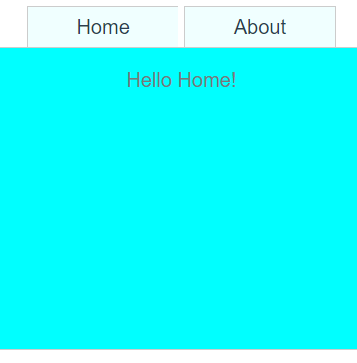 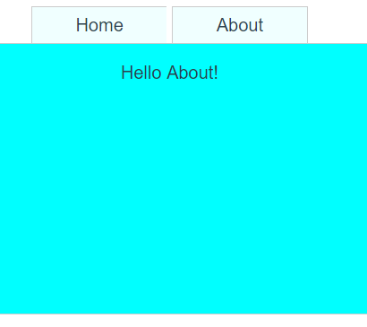
示例：
1 <template>
2 <slot-test>
3 <p>使用插槽分发内容</p>
4 <h1 slot="header">插槽测试!</h1>
5 <p>在组件中，没有指定插槽名称的元素将被置于默认插槽中</p>
6 <p slot="none">指定到不存在的插槽中的内容将不会被显示</p>
7 </slot-test>
8 </template>
9
10 <script>
11 let SlotTest = {
12 template: '<div>' +
13 '<slot name="header">相当于占位元素，因此这些文字也不会被渲染</slot>' + // 具名插槽
14 '<slot></slot>' + // 默认插槽
15 '</div>'
16 }
17 export default {
18 name: '',
19 components: {SlotTest}
20 }
21 </script>
22
23 <style scoped>
24
25 </style>我们看到由于3和5行没有指定name，所以插槽会使用么人插槽，也就是14行；而如果有name属性但是插槽
中没有与此相匹配的，那将会不显示，如第6行。
所以输出的结果就是：
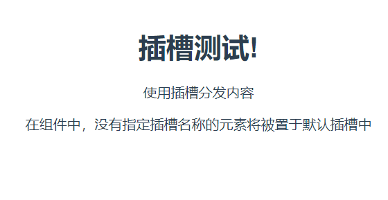
keep-alive是一个抽象组件，及他既不渲染任何DOM元素，也不会出现在组件结构树中。我们可以使用他缓存
一些非动态的组件实例（没有或不需要数据变化），以保留组件状态或减少重新渲染的开销。
keep-alive应出现在组件被移除之后需要再次挂在的地方，比如使用动态组件时：
1 <keep-alive>
2 <component :is="view"></component>
3 </keep-alive>
或者使用v-if时：
1 <keep-alive>
2 <one v-if="isOne"></one>
3 <two v-else></two>
4 </keep-alive>（1）单节点过渡：
Vue提供了标签为transition的内置组件，在下列情形中，我们可以给任何元素和组件添加进入/离开时的
过渡动画：
①元素或组件初始渲染时；
②元素或组件显示/隐藏时（使用v-if或v-show进行条件渲染时）
③元素或组件切换时
Vue允许用户使用CSS和JS两种方式来定义过渡动画。
在使用CSS过渡时，我们需要预置符合Vue规则的带样式的类名，这些类名用于定义过渡不同阶段时的样式：
①v-enter：定义进入过渡的开始状态。在元素被插入前生效，被插入后的下一帧移除；
②v-enter-active：定义进入过渡生效时的状态。在整个进入过渡阶段中应用，在元素被插入之前生效，
在过渡/动画完成之后移除。这个类可以用来定义进入过渡的过程时间、延迟的曲线函
数等；
③v-enter-to：（Vue 2.1.8 及以上版本）定义进入过渡结束时的状态。在元素被插入后的下一帧（此时
v-enter被移除），在过渡/动画完成之后移除；
④v-leave：定义离开过渡的开始状态。在离开过渡被触发时立刻生效，下一阵被移除；
⑤v-leave-active：丁一离开过渡生效时的状态。在整个离开过度的阶段中应用，在离开过渡被触发时立
刻生效，在过渡/动画完成之后移除。这个类可以被用来定义离开过度的过程时间、延迟
和曲线函数。
⑥v-leave-to：（Vue 2.1.8 版及以上版本）定义来开过度的结束状态。在离开过度被触发之后的下一帧生
效（此时v-leave被移除），在过渡/动画完成之后移除。
注：当失利中存在多个不同的动画效果时，我们可以使用自定义前缀替换v-，比如使用slide-enter替换v-enter
，不过这需要赋予transition元素name属性
到此为止，这六个定义是不是听起来很令人摸不到头脑呀？下面给大家个图，助你理解：
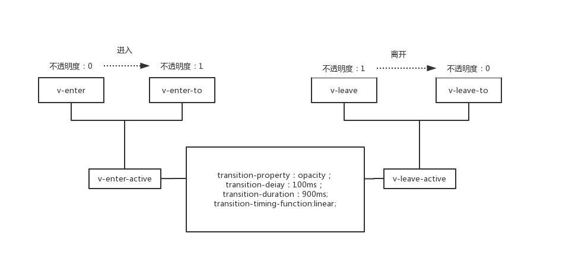
下面让我们看一个示例：
1 <template>
2 <div id="app">
3 <button @click="isHidden = !isHidden">
4 {{ isHidden ? '显示' : '隐藏' }}
5 </button>
6 <!-- 默认前缀的过渡 -->
7 <transition>
8 <p v-if="!isHidden">使用默认前缀的过渡</p>
9 </transition>
10 <!-- 自定义前缀的过渡，transitionName为变量 -->
11 <transition :name="transtionName">
12 <p v-if="!isHidden">使用rotate前缀的过渡</p>
13 </transition>
14 </div>
15 </template>
16
17 <script>
18 export default {
19 name: '',
20 data() {
21 return {
22 isHidden: true,
23 transtionName: 'rotate' // 如果在运行时，将transitionName改为v会怎样？
24
25 }
26 }
27 }
28 </script>
29
30 <style scoped>
31 .v-enter,
32 .v-leave-to {
33 opacity: 0;
34 }
35 .v-enter-active,
36 .v-leave-active {
37 transition-property: opacity; /* 过渡属性 */
38 transition-delay: 100ms; /* 延迟 */
39 transition-duration: 900ms; /* 过渡时长 */
40 transition-timing-function: linear; /* 贝塞尔曲线（动画速度曲线） */
41 }
42 .rotate-enter,
43 .rotate-leave-to {
44 transform: rotateY(90deg);
45 }
46 .rotate-enter-active,
47 .rotate-leave-active {
48 transform-origin: left;
49 transition: transform 1s linear;
50 }
51 </style>结果（由于不能插入mp4，所以这里就搞个静态的截图吧，从左到右，第一章是未点击显示按钮，第二张是点击
显示按钮，第三张是再次点击显示按钮）：
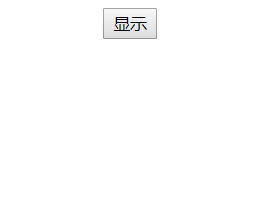 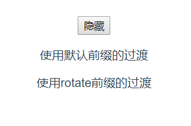 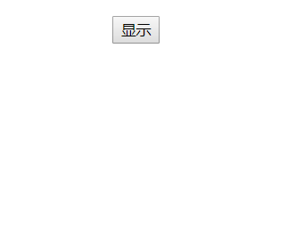
下面让我们来看一段代码：
这里我们引入了一个新概念key：当元素的key值发生变化时，Vue不回复用原有的元素，而将重建新的元素。根
据这一特点，我们可以通过改变元素的key值来触发过渡动画，这常被用在元素切换时。
1 <template>
2 <div id="app">
3 <button @click="isMaster = !isMaster">切换身份</button>
4 <transition>
5 <!-- 此处只写了一个p标签 -->
6 <p :key="isMaster ? 'master' : 'other'">{{ isMaster ? '大家好！' : '东家好！' }}</p>
7 </transition>
8 </div>
9 </template>
10
11 <script>
12 export default {
13 name: '#app',
14 data () {
15 return {
16 isMaster: true
17 }
18 }
19 }
20 </script>
21
22 <style scoped>
23 .v-enter, .v-leave-to {
24 opacity: 0;
25 }
26 .v-enter-active, .v-leave-active {
27 transition: opacity 1s;
28 }
29 </style>在浏览器打开如图1，点击切换身份（如图二到三）在身份切换过程中点击切换后前者并没有立刻消失，而是随着
另一个身份的出现而渐渐消失，此间两者都存在，那么如何解决这个问题嘞？
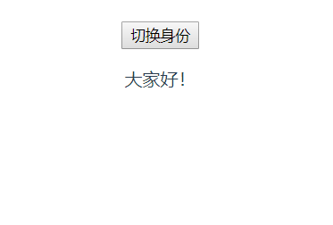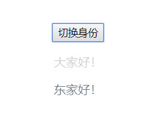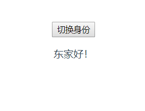
解决问题，修改如下代码，这时候上面那个两个身份同时出现的bug就消除啦：
1 <transition mode="out-in">
2 <!-- 此处只写了一个p标签 -->
3 <p :key="isMaster ? 'master' : 'other'">{{ isMaster ? '大家好！' : '东家好！' }}</p>
4 </transition>
（二）多节点过渡：
1 <template>
2 <div id="app">
3 <button @click="addNewItem()">添加元素</button>
4 <br>
5 <transition-group name="list" tag="ul">
6 <li v-for="item in list" :key="item">{{ item }}</li>
7 </transition-group>
8 </div>
9 </template>
10
11 <script>
12 export default {
13 name: '#app',
14 data () {
15 return {
16 list: [0, 1, 2, 3, 4, 5, 6, 7, 8, 9]
17 }
18 },
19 methods: {
20 addNewItem () {
21 this.list.push(this.list.length)
22 }
23 }
24 }
25 </script>
26
27 <style scoped>
28 .list-enter, .list-leave-to {
29 opacity: 0;
30 transform: translateY(30px);
31 }
32 .list-enter-active,
33 .list-leave-active {
34 transition: all 1s linear;
35 }
36 </style>
结果（点击添加元素，新的元素便会过渡出现，如下图所示）：
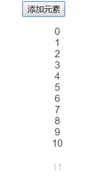
最后提供一个元素随机排序的简单的项目，读者们可以copy下来自己玩一下，里面涉及的逻辑不是很难
1 <template>
2 <div id="app">
3 <button @click="orderByRandom()">随机顺序</button>
4 <br>
5 <transition-group name="list" tag="ul">
6 <li v-for="item in list" :key="item">{{ item }}</li>
7 </transition-group>
8 </div>
9 </template>
10
11 <script>
12 export default {
13 name: '#app',
14 data () {
15 return {
16 list: [0, 1, 2, 3, 4]
17 }
18 },
19 methods: {
20 orderByRandom () { // 随机改变数组元素的位置
21 let tmp = [] // 初始化新数组
22 for (let i = 0; i < this.list.length; i++) {
23 let num = Math.floor(Math.random() * (this.list.length - 0.001)) // 随机新元素
24 // 当元素不在数组中时，将其加入到数组中
25 let index = tmp.indexOf(num)
26 while (index !== -1) {
27 num = Math.floor(Math.random() * (this.list.length - 0.001))
28 index = tmp.indexOf(num)
29 }
30 tmp.push(num)
31 }
32 this.list = tmp // 更改list为新的数组
33 }
34 }
35 }
36 </script>
37
38 <style scoped>
39 .list-move { /* 定义过渡效果 */
40 transition: transform 1s;
41 }
42 </style>所有代码都在，读者可自行下载：https://github.com/Stray-Kite/Vue_entry_practice/tree/master/chapter05